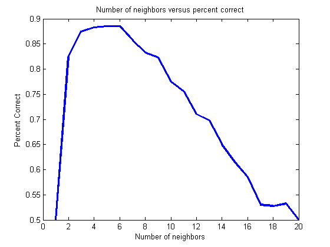

Evaluating classifiers
While prtScore functions operate on data sets, prtEval functions operate on classifiers and data sets. The other key difference is that they return scalars rather than vectors. They are useful for finding a particular performance measure of a classifier. They are also very useful for optimizing classifiers and performing feature reduction.
Contents
Using prtEval functions directly with prtActions
First, consider a simple example, evaluating the percent correct of a classifier:
dataSet = prtDataGenSpiral; classifier = prtClassDlrt; classifier.internalDecider = prtDecisionBinaryMinPe; pc = prtEvalPercentCorrect(classifier, dataSet)
pc =
0.9900
In the above, the minimum probability of error was used as the decision rule. Alternatively, we can specify a Pf to acheive and make decisions based on that:
% Set the decider so that the object has at least a probility of false % alarm of .1 or less. classifier = prtClassDlrt; classifier.internalDecider = prtDecisionBinarySpecifiedPf('pf',.1); pc = prtEvalPercentCorrect(classifier, dataSet)
pc =
0.9500
Evaluating classifier in conjunction with optimizing performance
Another important use of the prtEval functions is to optimize performance of a prtAction. Continuing the following example, use the optimize function to select the best performance of the classifier for a range of k values:
kVec = 1:20; [optClassifier, pc] = ... classifier.optimize(dataSet,... @(class,ds)prtEvalPercentCorrect(class,ds,10), 'k',kVec); % Plot plot(kVec, pc); title('Number of neighbors versus percent correct'); xlabel('Number of neighbors'); ylabel('Percent Correct')
The above example illustrates that increasing the number of neighbors improves the performance of the classifier for this data set, but only to a point, after which performance begins to decline.
All evaluation functions in the Pattern Recognition Toolbox have the same API as discussed above. The difference is in the performance metric to be evaluated. For a list of all the different functions, and links to their individual help entries, A list of commonly used functions
For more information on the use of prtEval functions in conjunction with feature selection techniques, see Feature Selection